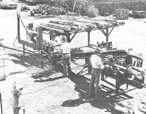

Nearly everybody knows someone who occasionally cuts and peddles firewood to bring in a few extra bucks. But, during the 1979/1980 winter alone, Lloyd Otis-manager of Douglaston Manor Farm in Pulaski, New York-will market 4,000 to 5,000 face cords of hardwood ... at $25 per cord wholesale and $28 retail.
And-since it's not unusual nowadays for Mr. Oils to receive a single order for 1,000 cords-his ultimate production and marketing goal of 10,000 cords a year may be just around the current energy-crisis corner.
Lloyd's fast-growing firewood business began-quite modestly-in 1975, when he took over the operation of the 4,000-acre farm owned by New York State Senator H. Douglas Barclay. He found that the farmhands-in clearing trails through the property's hardwood forests-had cut and stacked some 100 cords of maple, beech, cherry, and ash ... and-not being one to let potential income go to waste-the new manager got permission to sell this energy resource to the local community.
The 100 cords sold so rapidly that Lloyd decided to have 600 more cords cut by the following fall. However, even he was a little amazed when vehicles from as far away as Syracuse and Oswego overflowed the farm driveway and waited patiently in line to cart off the suddenly popular product.
That demand, though, was just fine with Mr. Otis ... because he figured he could simply increase the supply to meet the slew of orders that were sure to come in during the following season. To do that, the manager sold timber rights-on sections of the farm's abundant woodland-to the highest bidder, then arranged to buy back the cull timbers (which the loggers delivered right to the farmyard) for a small per ton price. And to insure a continuous supply of wood, he bought culls from other area loggers as well.
Once the logs were delivered, Lloyd and his helpers used chain saws and hand splitting tools to turn out 10 to 15 face cords a day. Yet-despite the fact that 2,000 cords were stacked and waiting for the third season-firewood-hungry New Yorkers had purchased the farm's entire stockpiled supply by the beginning of the New Year!
At that point, Lloyd began to think about automation, and he eventually located a $50,000 log processor manufactured by LaFont Corporation (Dept. TMEN, 1319 Town Street, Prentice, Wisconsin 54556). Now, with the device and a crew of three men, 50 cords of wood can be cut and split each day. One man simply saws the logs to the maximum length (10 feet) that the machine can handle, another uses a front-end loader to stack the timber on the processor, and a third operates the controls.
And although tree tops left in the woods by the logging crews were formerly allowed to rot away, Otis decided to put a man in the field-working full time during the spring, summer, and fall-to cut the tops to size and bring them to the yard as well ... to be processed by the new machine.
Then, in addition to the money spent on the log-processing system,, the farm invested another $50,000 in delivery trucks and related equipment ... including a 40-foot, portable, hydraulically operated conveyor belt that can be moved from one woodpile to another to load the firewood onto the vehicles. Unfortunately (as Lloyd notes ruefully), this helpful bit of automation sometimes fails to work when the weather is extremely cold ... and the conveyor's hopper still has to be loaded by hand. A tractor with a bucket is the other means used to stack the wood for delivery, but this machine must be hand-loaded, too ... to keep the dirt, sawdust, and-in the winter-ice and snow from getting into the measured load of "goods".
"It's a very labor-intensive business," the enterprising firewood supplier points out, "but we believe the price-and our profits-will continue to go up as demand for this renewable energy source increases."
Meanwhile, despite the heavy investment made in machinery, the future of the firewood business must seem very promising, because Douglaston Manor has already phased out its stable full of jumpers and hunters, its Guernsey herd, and a chicken operation. The "business end" of the New York farm-with the exception of 200 acres of grain corn-now concentrates totally on turning out huge winter wood supplies.
And, despite the fact that a good part of the summer of '78 was spent setting up the log processor and enclosing it in a building (so the crew could work in any weather), 3,000 cords were sold last year.
Now, in addition to selling firewood directly from the farm, a big part of the Manor's business is done on a wholesale basis ... to retailers (such as nurseries) who buy in large quantities.
"We also get hundreds of calls from New York City and Boston companies wanting our wood, but-since gasoline prices are high-we have to charge more than the urban firms want to pay." However, if a retail or wholesale buyer is willing to absorb delivery costs, Lloyd will haul his product over any reasonable distance. He already covers homes and businesses throughout central and upstate New York-selling wholesale to Buffalo and Rochester-and even the quite distant Cape Cod area. In fact, the farm is now one of the biggest suppliers of processed firewood in the Northeast. And-as oil and gas prices soar-business can only get better.
"I've heard that full cords of hardwood are already selling for $200 in highly populated areas," Lloyd notes. "At that rate, our wholesale price of $75 for a full cord is extremely reasonable."
The day we talked to the busy manager, his machine operator had been laid up with an injury, and Lloyd himself was running the big log processor. However, not much work was actually getting done, because he had to keep shutting down the equipment to deal with the incessant orders for firewood that keep flowing into Douglaston Manor Farm.
|
 Lloyd Otis's automatic sawer/splitter can cut 50 face cords of firewood in one day! |
|
|